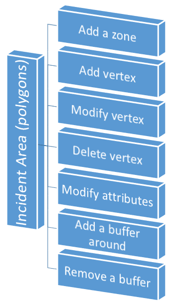
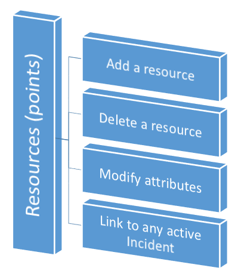

What can you do with MASAS?


What can't you do?
- Move an Incident Area. It is not useful since an area usually is defined following geographic features, such as urban areas, forest borders, ponds, etc.
- Declare null the incident start date. Date are important in an Incident Management System, so any incident needs a start date, always.
- Link resources to not active incidents.
- See resources on the 'list mode'. List mode shows just incidents, not resources.